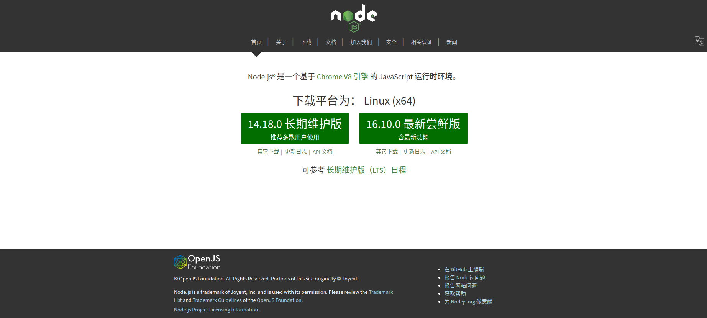
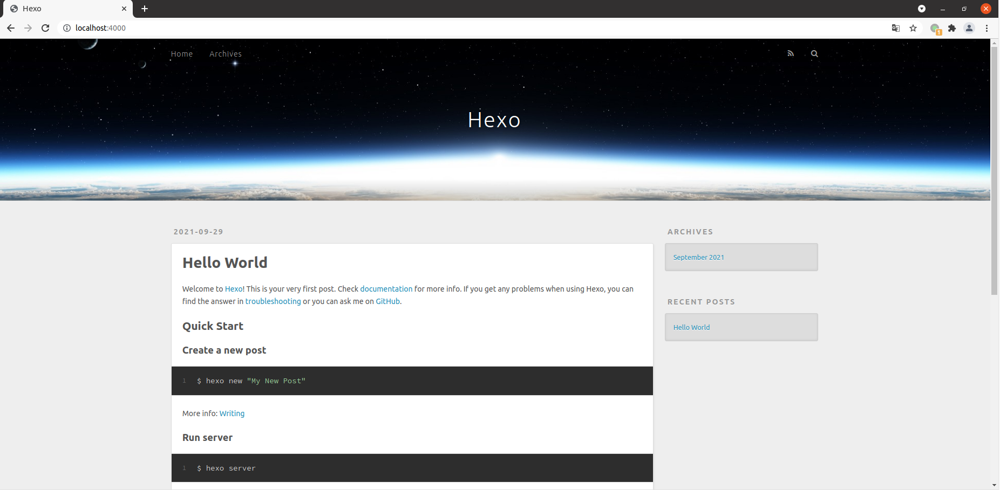
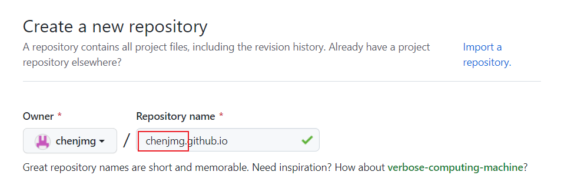
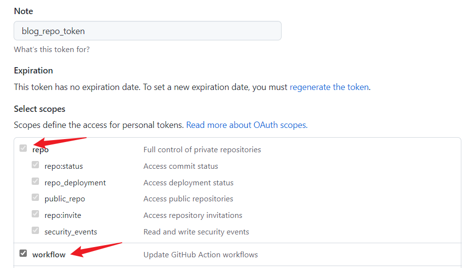
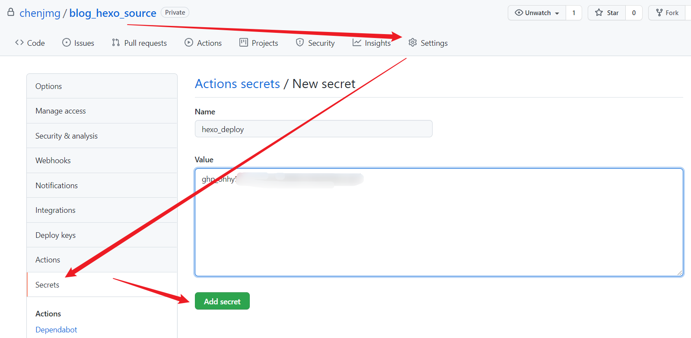
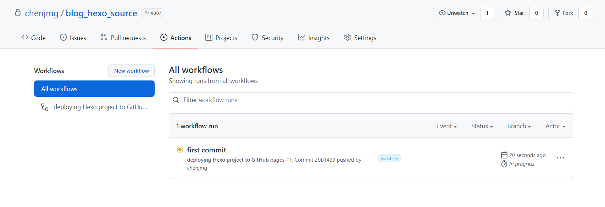

参考code sheep
基于Ubuntu20.04版本搭建
安装node.js
用编译好的包安装

进入官网，选择LTS长期维护版。
Ubuntu版本下载下来之后是一个 .tar.xz 格式的压缩包文件，使用以下命令解压该压缩包：
1 | $ tar -Jxvf node-v14.18.0-linux-x64.tar.xz # 当前下载的版本号为v14.18.0 |
切换到 bin文件夹下，文件夹下有三个文件，分别是 node，npm，npx。
使用 ln 命令设置软链接 ：
1 | $ sudo ln -s ~/Downloads/node-v14.18.0-linux-x64/bin/npm /usr/local/bin |
1 | $ sudo ln -s ~/Downloads/node-v14.18.0-linux-x64/bin/node /usr/local/bin |
设置完成之后，执行命令查看安装的 node.js 的版本，并可检测是否安装成功：
1 | $ node -v |
如果要卸载 node.js，只需要删除下载的 node.js 包，然后再删除掉软链接即可。
软链接的路径在 /usr/local/bin 下。
1 | $ sudo rm /usr/local/bin/npm |
1 | $ sudo rm /usr/local/bin/node |
apt-get安装
使用软件源安装nodejs和npm，命令如下：
1 | $ sudo apt-get install nodejs |
1 | $ sudo apt-get install npm |
安装完成后，执行命令可查看当前安装的nodejs的版本：
1 | $ node -v |
如果要卸载安装的 node.js 和 npm，使用以下命令卸载：
1 | $ sudo apt-get remove --purge npm |
1 | $ sudo apt-get remove --purge nodejs |
1 | $ sudo apt-get remove --purge nodejs-legacy |
1 | $ sudo apt-get autoremove |
清理相关文件夹：
1 | $ rm -r /usr/local/bin/npm |
1 | $ rm -r /usr/local/lib/node-moudels |
1 | $ find / -name npm |
1 | $ rm -r /tmp/npm* |
安装cnpm
hexo 的安装需要 npm 来完成，但是由于镜像源的原因，使用 npm 安装下载速度会很慢，所以需要借助 cnpm 来安装。
安装命令如下：
1 | $ npm install -g cnpm --registry=https://registry.npm.taobao.org # -g 全局安装，并且把镜像源指向taobao |
安装完成后，设置软链接：
1 | $ sudo ln -s ~/Downloads/node-v14.18.0-linux-x64/bin/cnpm /usr/local/bin |
查看 cnpm 的版本：
1 | $ cnpm -v |
使用cnpm安装hexo
接下来，用 cnpm 安装 hexo。
使用以下命令开始安装：
1 | $ cnpm install -g hexo-cli |
安装完成后，设置软链接：
1 | $ sudo ln -s ~/Downloads/node-v14.18.0-linux-x64/bin/hexo /usr/local/bin |
执行命令，查看安装的 hexo 的版本号，并验证是否安装正确：
1 | $ hexo -v |
初始化博客
建立一个空白文件夹，用来存放博客的所有文件，如果在后续的使用中出现了问题，则直接删除 blog/ 文件夹即可。
1 | $ mkdir blog |
进入到 blog/ 文件夹下，使用命令初始化博客：
1 | $ hexo init |
当出现以下结果时，说明当前 hexo 博客初始化完成。
1 | INFO Cloning hexo-starter https://github.com/hexojs/hexo-starter.git |
在 blog/ 目录下，查看文件结构：
1 | blog/ |
启动博客
执行以下命令开始启动博客：
1 | $ hexo s # start |
终端会出现如下结果：
1 | INFO Validating config |
可以看到，hexo 在本地的4000端口启动了，这时候打开浏览器，在地址栏中输入 http://localhost:4000 ，即可在本地访问博客。
hexo 默认会自带一个主题，而且带有一篇 hello world 的文章。

在刚才启动 hexo 的终端里，执行 Ctrl + C ，就可以关闭 Hexo。
hexo s 的作用主要是用来在你写完一篇文章后，在本地预览一下效果。
编写一篇文章
进入 blog/ 文件夹下，使用命令，创建一篇博客文章。
示例使用博客文章名为 《我的第一篇文章》，命令如下：
1 | $ hexo n 我的第一篇文章 # hexo new |
完成后，终端输出如下内容：
1 | INFO Validating config |
进入到 source/_posts/ 下，可以看到已经生成的文章，是一个 .md 的 markdown 文件。
完成文章的编写后，回到 blog/ ，开始生成博客，使用以下命令：
1 | $ hexo g # hexo generate |
这时候再启动以下 hexo，然后浏览器打开，就可以看到新发布的文章了。
部署博客到github
创建仓库
进入github主页，创建一个新的仓库。其中，仓库名中的前缀必须是你的github账户名称。

回到 blog/ 目录下，用 cnpm 安装一个 git 插件，使用如下命令安装：
1 | $ sudo cnpm install --save hexo-deployer-git |
安装完成后终端输出如下：
1 | ✔ Installed 1 packages |
修改配置
打开 blog/ 目录下的 _config.yml 文件：
1 | $ vim _config.yml |
翻到文件的末尾，找到 # Deployment，修改段内容如下：
1 | deploy: |
其中，type 指定仓库类型为 git，repo 为仓库的地址，branch 为推送的分支。
部署到远端
执行命令，部署到 git 仓库：
1 | $ hexo d |
等待 git push 完成，在仓库里刷新，就能看到推送到远端的内容。
要访问博客，在浏览器中输入链接打开即可。
1 | https://chenjmg.github.io |
修改主题
查找主题
hexo 提供一个主题的商店，访问地址：
1 | https://hexo.io/themes/ |
这里选择一个名为 Keep 的主题，进入仓库。
1 | https://github.com/XPoet/hexo-theme-keep |
获取主题
进入到 blog/ 目录下，将主题克隆到本地 /themes/keep/ 目录下，其中，keep/ 为当前主题的名称，没有特别指定。
1 | $ git clone https://github.com/XPoet/hexo-theme-keep themes/keep |
配置主题
现在，keep主题的文件都已经下载到本地了。
回到 blog/ 目录下，编辑配置文件 _config.yml：
1 | $ vim _config.yml |
打开之后，找到 # Extensions ，默认的值为：
1 | # Extensions |
修改 theme 字段，把 landscape 改成刚才下载的主题 keep。保存退出。
清理后重新生成博客。
1 | $ hexo clean |
1 | $ hexo g |
启动后，在端口中就可以看到新的主题样式了。
使用命令推到远端：
1 | $ hexo d |
自动部署
现在，我们使用 hexo d 将 hexo 的代码部署到 GitHub 服务器上。我们也可以借助工具，实现 hexo 的自动部署，而我们只需要像 Push 代码一样将代码推到 GitHub 服务器即可。
我们使用的工具是 GitHub Action 。
使用 GitHub Action 自动部署的好处
可以在线修改 .md 文件。可以通过 GitHub 的界面直接修改 .md 文件，而不是通过本地。修改完之后直接保存，修改的内容立即在博客上生效；
修改更高效。每次修改为本地的文件之后，无需再生成博客，而是通过 Git 的 Push ，直接将修改的部分推到 GitHub 的服务端，连
hexo g都不需要；可以实现在不同的电脑上更新博客，且不需要每台电脑都配置着 hexo 的环境；
准备工作
创建私有仓库
创建一个私有的仓库，用来存放 hexo 博客的源码。
创建 token
创建一个有 repo 和 workflow 的 GitHub Token。

创建repository secret
将刚才生成的 Token 添加到私有仓库中。

添加 Action 配置文件
在 Hexo 项目的根目录，也就是博客 blog/ 的根目录下创建一个文件夹 .github/ ；
在 .github/ 下创建一个文件夹 workflows/ ；
在 workflows/ 文件夹下创建一个文件 hexo-deploy.yml/ ；
hexo-deploy.yml 的内容如下
1 | name: deploying Hexo project to GitHub pages |
自动部署流程
完成博客的编写或者修改；
执行 Git 提交的流程，并推送到 master 分支；
GitHub Actions 检测到 master 分支有内容 push 进来，会自动执行 action 配置文件的命令，将 Hexo 项目编译成静态页面，然后部署到公共仓库的 gh-pages 分支；
提交 action 的时候，在仓库 action 会报一个错误，要修改 _config.yml 里的
highlight:，将 enable 改为 false 。
- 推送成功后可以在仓库的 Action 里看到一个正在转换的项目；

等待转换完成；
如果你发现转换后博客的页面上是空白的，且你的主题是通过
npm install安装的，那你最好换成git clone的方式，确保 theme/ 文件夹下有主题的源文件。
多电脑编写
如果要在多台电脑上编写博客，那么只需要在另一台电脑上安装好 hexo 环境即可。
安装好 hexo 环境，然后将博客的源码（自动部署的那个私有仓库源码）克隆至本地，然后安装一下环境所需的组件，执行以下命令：
1 | $ npm install |
或者
1 | $ cnpm install |
接下来，就可以在博客的目录下操作了。
End of file
- Post title：使用hexo创建个人博客
- Post author：Jimmy
- Create time：2021-09-29 18:11:54
- Post link：https://www.gogojimmy.top/2021/09/29/使用hexo创建个人博客/
- Copyright Notice：All articles in this blog are licensed under BY-NC-SA unless stating additionally.